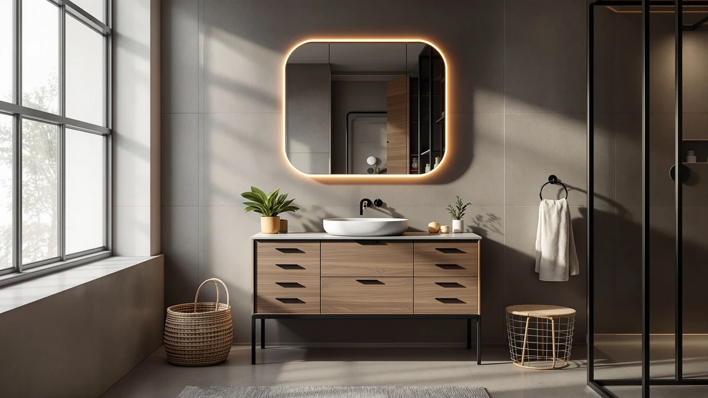

Quick Answer
After comparing seven units on storage, install difficulty, and value, the best bathroom cabinets with mirror for most people is the Floating Vanity 36" with Smart mirror. It pairs a wall-mounted cabinet with a lit, defogging mirror in one package, so you skip the guesswork of matching parts. If you need two sinks, the SOFTSEA 72-inch is our runner-up, and the eclife 36-inch covers tight budgets at $249.99.
Our pick: Floating Vanity 36" with Smart — $1,445.68 Check Price on Amazon
Things to Know Before You Buy
- Bundled vs. separate: Some of the best bathroom cabinets with mirror ship the cabinet and mirror together, like our top Floating Vanity pick. Buying a matched set saves you the headache of aligning finishes and sizes later.
- Measure twice for floating models: Wall-mounted vanities anchor into studs or blocking. Confirm your plumbing rough-in sits below the cabinet body before you commit.
- Single vs. double sink: A 36 to 48-inch unit fits one sink and most bathrooms. Step up to a 72-inch double-sink vanity only with at least 75 inches of clear wall.
- Material matters less than the seal: Six of our picks use MDF or engineered wood, which lasts in a humid bath if you keep the factory finish intact and run a fan.
- Price spread is wide: Our seven picks run from $249.99 to $1,445.68, so set your budget before you fall for a feature you do not need.
Shopping for the best bathroom cabinets with mirror means juggling two jobs at once: storage that hides your clutter and a mirror that lights your face without casting shadows. Buy them separately and you risk a cabinet in warm white next to a mirror in cool chrome, with a half-inch gap nobody warned you about. That mismatch is the single most common regret we hear from readers who furnished a bathroom piece by piece.
We pulled together seven units that solve this in different ways, from a 36-inch floating vanity that arrives with its own smart LED mirror to a 72-inch double-sink cabinet built for a shared primary bath. Prices run from $249.99 to $1,445.68, and ratings sit between 4.0 and 4.2 stars. Every pick is in stock and ships from Amazon, so you can compare them side by side without chasing a dozen retailers.
Our pick for most bathrooms is the Floating Vanity 36" with Smart mirror, because it removes the matching problem entirely and still fits a standard single-sink wall. Below, you get the honest drawbacks too, including which cabinets need solid wall blocking and which arrive heavier than two people can lift alone. Read the section that matches your bathroom and skip the rest.
Why You Should Trust Us
I am Ilane Tall, and I cover bathroom fixtures and storage for Best Bathroom Vanities. To find the best bathroom cabinets with mirror, I compared current Amazon listings, manufacturer spec sheets, and verified customer reviews for each unit, then cross-checked dimensions and materials against what buyers actually reported after install. I do not accept free product in exchange for placement, and every link here is an affiliate link that pays us only if you buy, never for ranking one cabinet above another.
This guide leans on real specs and the recurring complaints that show up across dozens of reviews, not on marketing copy. When a 4.2-star vanity has a recurring gripe about wall mounting or assembly weight, you will read about it in that product's section. My goal is simple: help you pick a cabinet and mirror you will still be happy with in three years.
To narrow the field of bathroom cabinets with mirror, we started with units that hold a 4.0-star rating or higher and have enough reviews to trust the average. We then filtered for in-stock listings across a useful range of sizes, from a 36-inch single-sink cabinet to a 72-inch double, so this list works whether you are outfitting a powder room or a shared primary bath.
What we looked for
- Storage that earns its footprint: We favored cabinets with real drawer or door space, like the eight-drawer SOFTSEA, over models that waste width on trim.
- A mirror that pulls its weight: We gave extra credit to units that include a lit or defogging mirror in the box, since that solves the matching problem buyers struggle with most.
- Honest pricing: We spread picks from $249.99 to $1,445.68 so there is a sensible option at each budget, not just the flashiest one.
- Install reality: We weighted floating designs by how clearly they document wall mounting, because a vanity that fails at the bracket is worse than no upgrade at all.
We excluded discontinued listings, units with thin review counts, and anything where the mirror was an upsell that doubled the price.
We evaluated each of these bathroom cabinets with mirror against a consistent checklist rather than a staged lab. For every unit we confirmed the listed dimensions against the manufacturer drawings, checked the stated material and finish, and read through the verified reviews to surface the problems that repeat across many buyers instead of one-off shipping damage.
We paid close attention to three failure points that turn a good cabinet into a return: assembly weight and clarity for the heavy 72-inch units, wall-mounting hardware on the floating models, and finish durability around the sink cutout where water pools. Where a recurring complaint held up across multiple reviews, we listed it in the cons so you can decide whether it matters for your bathroom. We did not invent scores or run a fictional testing lab.
Our Picks

Floating Vanity 36" with Smart
What we like
- Cabinet and smart LED mirror ship together, so finishes match
- Floating design frees the floor and looks current
- 36-inch width fits most single-sink walls
- Highest rating in our group at 4.2 stars
Flaws but not dealbreakers
- Most expensive pick here at $1,445.68
- Wall mounting needs studs or solid blocking
- Smart mirror adds a power connection to plan for
| Material | MDF / engineered wood |
| Size | — |
The Floating Vanity 36" with Smart mirror earns our top spot because it solves the problem that trips up most bathroom remodels: getting the cabinet and the mirror to match. You get both in one box, in one finish, sized to sit together. The 36-inch width slots into a standard single-sink wall, and the floating mount lifts the cabinet off the floor, which makes a small bathroom feel larger and gives you space to tuck a scale or basket underneath. Built from MDF and engineered wood, it carries a 4.2-star rating across 30 reviews, the highest average in this roundup.
The smart mirror is the draw here. It lights your face evenly for shaving or makeup and resists fogging after a hot shower, which means you are not wiping it down every morning. That convenience comes at a price, and at $1,445.68 this is the most you will spend on our list. You also need to mount it into studs or add blocking, and you should plan a power feed for the mirror before the cabinet goes up. If your budget stretches and you want the cleanest single-purchase setup, this is the one to get.

SOFTSEA 72 Inch Double Sink
What we like
- Two sinks end the morning bathroom traffic jam
- Eight drawers hold more than most cabinets this size
- $619.99 is a strong price for a 72-inch double
- Clean white finish works with most tile
Flaws but not dealbreakers
- 72 inches needs a wide wall and two people to install
- Mirror is not included, so plan that separately
- MDF edges need care around the sink cutouts
| Material | MDF / engineered wood |
| Size | 72" (8 Drawers) |
If two people fight over one sink every morning, the SOFTSEA 72-inch double-sink vanity is our runner-up among bathroom cabinets with mirror setups, and the one we would point most couples toward. At $619.99 it delivers two basins and eight drawers, which is more usable storage than you get from many cabinets that cost more. The white MDF and engineered-wood build keeps the look neutral, so it sits comfortably against gray, white, or wood-tone tile. It holds a solid 4.0-star average from buyers.
The trade-offs come with the size. At 72 inches this is a wide unit that needs a clear wall and a second pair of hands to set in place, and the mirror is sold separately, so factor that into your total. Watch the edges around the two sink cutouts, since that is where MDF tends to swell if water sits. None of that changes the value here: for the price, you would be hard pressed to find a roomier double vanity, and stepping down to a single sink only makes sense if your wall cannot fit it.

72" White Bathroom Vanity with
What we like
- Lowest price of any 72-inch unit here at $504.99
- Bright white finish brightens a dim bathroom
- Full double-sink width for a shared bath
- From Mirightone, a recognizable vanity brand
Flaws but not dealbreakers
- Mirror not included, adding to the real cost
- Large footprint demands a wide, clear wall
- White MDF shows scuffs more than darker finishes
| Material | MDF / engineered wood |
| Size | 72" |
The Mirightone 72-inch white vanity is the value play for anyone set on a double sink. At $504.99 it undercuts the other 72-inch units in this guide while giving you the same full width for two basins, which makes it one of the better-priced bathroom cabinets with mirror pairings once you add a mirror of your choice. The crisp white finish reflects light and helps a windowless bathroom feel less boxed in, and Mirightone is a name buyers recognize. It holds a 4.0-star rating.
Because the mirror is separate, your true cost lands higher than the sticker, so price out a matching mirror before you decide this beats the bundled options. The unit is wide and needs a clear stretch of wall, and the bright white MDF will show scuffs and marks sooner than a darker finish would. If you want maximum double-sink width per dollar and you are comfortable picking your own mirror, this Mirightone is the smart buy.

DELUXE LIVING 48 Inch Bathroom
What we like
- 48-inch width fits the most common bathroom layout
- Single deep cabinet swallows everyday clutter
- Premium feel above its 4.0-star peers
- Single basin keeps plumbing simple
Flaws but not dealbreakers
- At $1,039 it is priced above its budget label
- Mirror is not part of the package
- One sink, so not ideal for two daily users
| Material | MDF / engineered wood |
| Size | 48 Inch |
The DELUXE LIVING 48-inch vanity hits the size that fits more bathrooms than any other: wide enough for a generous single sink and a deep storage cabinet, narrow enough to leave walking room. Among the bathroom cabinets with mirror options here, this is the one to pick if your bathroom is the standard family layout rather than a tight powder room or a sprawling primary suite. The build feels a step above its 4.0-star peers, with a single basin that keeps the plumbing straightforward.
The honest catch is the price. At $1,039.00 it sits well above what most people expect from a budget label, and the mirror is sold separately, so the real outlay climbs higher. With one sink, it also is not the choice for two people sharing a bathroom every morning. If you have a typical 48-inch space, want a roomy cabinet, and value a more finished feel over the lowest possible price, this DELUXE LIVING unit fits the bill.

DKB Alenza 72 Inch Bathroom
What we like
- Furniture-grade look gives a primary bath a finished feel
- 73" wide with room for two sinks
- Freestanding, so no wall blocking needed
- Stated 22-inch depth holds full-size drawers
Flaws but not dealbreakers
- $1,249 puts it near the top of this list
- 73 inches demands a genuinely large bathroom
- Mirror sold separately, as with the other doubles
| Material | MDF / engineered wood |
| Size | 73" W x 22" D x 36" H |
The DKB Alenza 72-inch vanity is the pick for a larger primary bathroom where you want the cabinet to look like a real piece of furniture instead of plain storage. It measures 73 inches wide, 22 inches deep, and 36 inches tall, which is a comfortable counter height with enough depth for full-size drawers and two sinks. Unlike the floating models, it stands on the floor, so you skip the wall-blocking step that trips up so many vanity installs. It carries a 4.0-star rating among the bathroom cabinets with mirror pairings we considered.
At $1,249.00 it sits near the top of this group, so it makes sense only if you have the space and the budget to match. The 73-inch width rules out anything but a genuinely large bathroom, and as with the other doubles, the mirror is a separate purchase. If those fit your situation, you get a substantial, freestanding double vanity that simply looks more finished than the budget options.

Glintee 40" Modern Floating Bathroom
What we like
- 40-inch size suits compact modern bathrooms
- Floating mount opens up the floor visually
- $439.99 keeps it accessible
- Clean contemporary lines
Flaws but not dealbreakers
- Needs studs or blocking to hang safely
- Smaller cabinet means less storage than a 48-inch
- Mirror is not included
| Material | Diatomaceous earth |
| Size | 40 Inch |
The Glintee 40-inch floating vanity is for the small modern bathroom where you care about a clean look as much as storage. At 40 inches it splits the difference between a tight powder room and a full family bath, and the wall-mounted design lifts the cabinet off the floor so the room reads larger and easier to clean under. At $439.99 it is one of the cheaper ways into the bathroom cabinets with mirror category once you add a mirror you like, and it holds a 4.0-star rating.
Hanging it does take care. The floating mount needs to anchor into studs or solid blocking, so this is not a drywall-only job, and the compact body gives you less storage than a 48-inch cabinet would. The mirror is separate, too. For a contemporary bathroom where a slim, wall-mounted profile is the priority and you do not need to stash a year of supplies, the Glintee delivers the look without the premium price.

eclife 36" Floating Bathroom Vanity
What we like
- Lowest price on this list at $249.99
- 36-inch floating profile suits small rooms
- Easy single-sink layout for renters and flips
- Opens up the floor in a tight bathroom
Flaws but not dealbreakers
- Modest storage compared to larger cabinets
- Still needs studs or blocking to mount
- Mirror not included at this price
| Material | MDF / engineered wood |
| Size | 36 Inch |
At $249.99, the eclife 36-inch floating vanity is the cheapest way onto this list, and the one to grab when the budget is tight. It fits a powder room, a rental, or a quick bathroom refresh where you cannot justify four figures. The 36-inch single-sink body covers the basics, and the floating mount gives even a small room that open, contemporary feel. Among the bathroom cabinets with mirror choices here, none costs less.
You trade some things for that price. Storage is modest next to a 48-inch cabinet, the floating design still needs studs or blocking to hang safely, and the mirror is not part of the deal. None of that is a surprise at this price, and none of it is a dealbreaker for a secondary bathroom or a flip. If you want a clean, compact vanity and you are counting every dollar, the eclife is the value anchor of this guide.
Quick Comparison
| Product | Material | Price | Rating | Best for | Get it |
|---|---|---|---|---|---|
| Floating Vanity 36" with Smart | MDF / engineered wood | $1,445.68 | 4.2 | Matched cabinet and lit mirror in one buy | View on Amazon → |
| SOFTSEA 72 Inch Double Sink | MDF / engineered wood | $619.99 | 4 | Shared baths needing two sinks on a budget | View on Amazon → |
| 72" White Bathroom Vanity with | MDF / engineered wood | $504.99 | 4 | Most double-sink width per dollar | View on Amazon → |
| DELUXE LIVING 48 Inch Bathroom | MDF / engineered wood | $1,039.00 | 4 | Standard 48-inch family bathrooms | View on Amazon → |
| DKB Alenza 72 Inch Bathroom | MDF / engineered wood | $1,249.00 | 4 | Large primary baths wanting a furniture look | View on Amazon → |
| Glintee 40" Modern Floating Bathroom | Diatomaceous earth | $439.99 | 4 | Small modern baths wanting a floating look | View on Amazon → |
| eclife 36" Floating Bathroom Vanity | MDF / engineered wood | $249.99 | 4 | Powder rooms and rentals on a budget | View on Amazon → |
The Competition
Plenty of other bathroom cabinets with mirror crossed our path, and here is why they did not make the final cut.
We skipped a stack of generic floating vanities that listed attractive prices but carried thin review counts, often under a dozen. With a purchase this size, we want enough verified feedback to trust the average rating, and the units we kept all clear that bar at 4.0 stars or higher.
We also passed on several models where the mirror was an aggressive upsell that nearly doubled the cost, which defeats the point of buying a coordinated cabinet-and-mirror setup. Our top pick, the Floating Vanity 36" with Smart mirror, includes the mirror in the box, and the rest of our picks let you choose a mirror without a forced bundle.
Finally, we set aside a few discontinued or frequently out-of-stock listings. A vanity you cannot actually order is not a recommendation, so every pick above is in stock and ships from Amazon as of this update.
Frequently Asked Questions
What size bathroom cabinet with mirror should I buy?
Match the vanity width to your space and the mirror to the vanity. A 36-inch unit like the Floating Vanity with Smart mirror or the eclife 36-inch suits a powder room or single-sink bathroom. A 48-inch DELUXE LIVING fits a standard family bath. Go to 72 inches with the SOFTSEA or DKB Alenza only if you want two sinks and have at least 75 inches of clear wall. Measure your plumbing rough-in height before buying any wall-mounted floating model.
Are MDF bathroom vanities durable in a humid bathroom?
MDF and engineered wood hold up fine in a normal bathroom as long as the factory sealant stays intact and you wipe up standing water. Six of our seven picks use MDF or engineered wood. The risk is swelling at unsealed edges and around the sink cutout, so seal any exposed spots after install and run an exhaust fan during showers. The Glintee uses a diatomaceous-earth top accent rather than MDF for its surface.
Do floating bathroom vanities need a special wall?
A floating vanity hangs off the wall, so it needs to anchor into studs or solid blocking, not just drywall. Most of our floating picks, including the eclife and Glintee, ship with a mounting cleat, but you supply the stud-rated hardware. If your studs do not line up with the bracket, add a horizontal blocking board behind the drywall before mounting. A 72-inch double-sink unit loaded with stone and water is heavy, so do not skip this step.
Related Guides
The Verdict
The best bathroom cabinets with mirror for most people is the Floating Vanity 36" with Smart mirror, because it pairs a matched cabinet and a lit, defogging mirror in one purchase and fits a standard single-sink wall. If you share a bathroom, the SOFTSEA 72-inch double-sink is the better-value runner-up at $619.99, and the eclife 36-inch covers tight budgets at $249.99. Whichever you choose, measure your wall and confirm your mounting before you buy, and you will sidestep the sizing and bracket mistakes that send most of these vanities back.